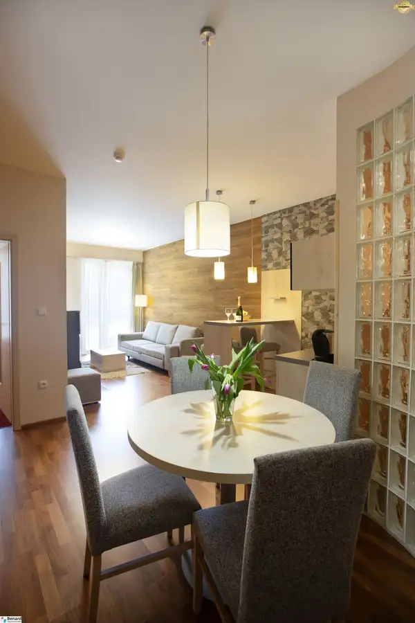
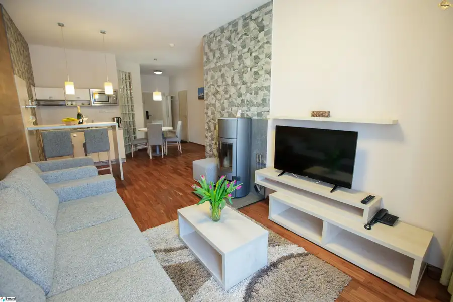
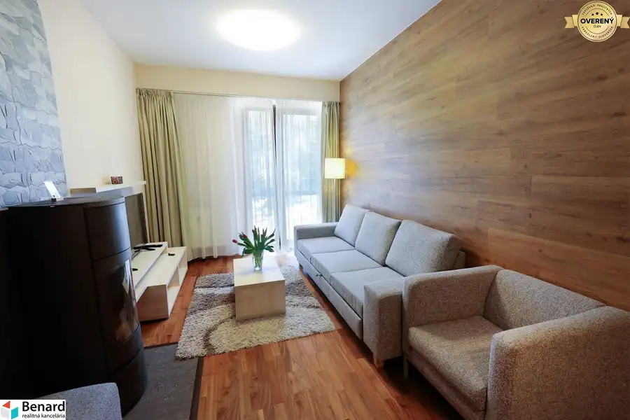
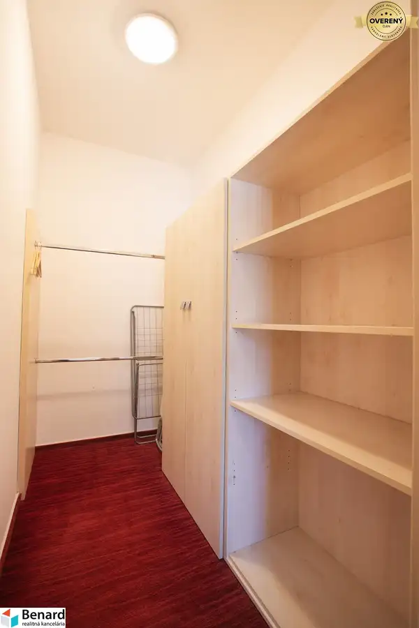
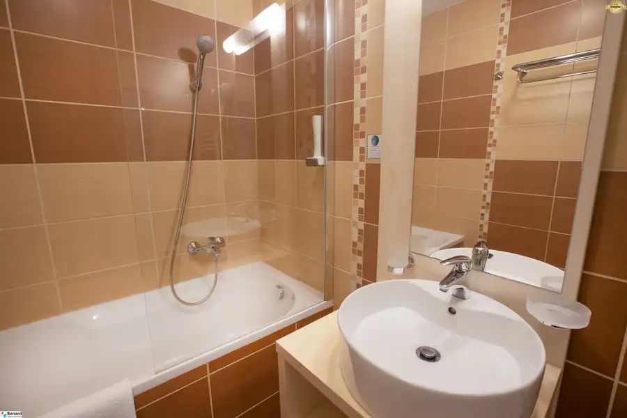
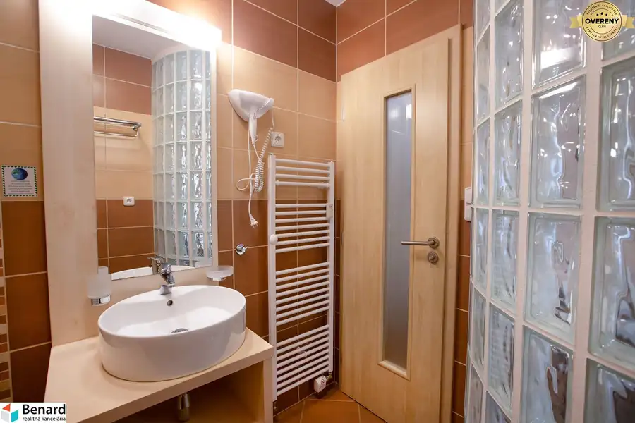

APARTMÁN na Štrbskom Plese
Strbske-pleso







- Dispozícia2-izbový
- Plocha55.95 m²
- Poschodie3. z 3
- Stavčiastočne prerobený
- Vlastníctvoosobné
- Energetická triedaB
O nehnuteľnosti
Benard ponúka exkluzívne na predaj apartmán 56 m2 na Štrbskom Plese. Či už ste milovníkom hôr, alebo zvažujete investíciu v Tatrách, táto ponuka je šitá pre Vás.
APARTMÁN
- priamo v centre Štrbského Plesa, v hoteli s apartmánmi, ideálna rozloha rekreačného apartmánu 56 m2
- apartmán sa nachádza na 3. poschodí z troch, na prízemi sa nachádza reštaurácia, detský kútik, v suteréne recepcia, lyžiareň, wellness
- denná časť (kuchynka s jedálenskou časťou, obývacia časť) orientovaná na Z
- spálňa s priestranným šatníkom (s trezorom a sušiakom) orientovaná na Z
- súčasťou kuchynskej linky sú vstavané spotrebiče: el. varná doska, chladnička
- v kúpeľni sa nachádza vaňa, umývadlo so zrkadlom, zabudovaný fén
- súčasťou apartmánu je samostatné WC
- apartmán disponuje aj kumbálom, kde si môže vlastník uskladniť osobné veci v prípade vyťažovania apartmánu
- k apartmánu prislúcha podiel na spoločných častiach apartmánového domu, konkrétne na lyžiarni a wellness
- výbava apartmánu: laminátové podlahy, drevené okná, murované jadro, keramické obklady v kúpeľni a WC, kuchynská linka na mieru
- TV formou satelitu (aj v obývacej časti aj v spálni) a WIFI internet sú samozrejmosťou
- celkové mesačné náklady s kompletnou správou, upratovaním a službami recepcie sú vo výške 290€/mesiac
APARTMÁN
OVÝ DOM
- apartmánový dom bol skolaudovaný v roku 2008
- súčasťou apartmánového domu je výťah, bezbarierový prístup samozrejmosťou
- parkovanie na parkovisku pri apartmánovom dome
- apartmánový dom má zabezpečené vykurovanie vlastnou kotolňou
- služba non-stop recepcie
- priamo v apartmánovom dome sa nachádza komorné wellness, lyžiareň, reštaurácia a obchody
- apartmánový dom bezprostredne susedí so stanicou zubačiek a električiek, reštauráciami a hotelmi
- autobusová či železničná stanica vzdialené 0 km
- vo výbornej dostupnosti napojenie na D1 zjazd/výjazd Štrba (12 min.)
VÝHODY NEHNUTEĽNOSTI
- exkluzívna a unikátna lokalita
- bez nutných ďalších investícii, priamo v centre
- vzdialenosť Štrbského plesa do 5 minút chôdzou, turistických trás do 10 minút, bežkárske trate do 10 minút, lyžiarsky svah do 15 minút
- počas zimnej sezóny premáva v pravidelných intervaloch skibus priamo od apartmánového domu
- vhodná nehnuteľnosť ako investícia, ponúka všetky služby potrebné s vyťažovaním ubytovacích kapacít (recepcia, upratovanie)
Ak máte záujem o obhliadku prípadne potrebujete viac informácii nájdete nás v realitnom centre Benard na Karpatskej ul. č. 50 v Poprade, prípadne na alebo na telefónnom čísle .
ZADARMO K TEJTO NEHNUTEĽNOSTI DOSTANETE
- inzerovanie nehnuteľnosti na najsledovanejších realitných portáloch
- preverenie právneho stavu a tiarch danej nehnuteľnosti
- vysvetlenie problémov záložných tiarch, vecných bremien a pod.
- právny servis zabezpečený právnikom s dlhoročnými skúsenosťami
- kópiu LV prípadne katastrálnej mapy s kolkom na právne účely
- poplatky za overenie podpisov na zmluvách u notára;
- správny poplatok za vklad vlastníckeho práva do katastra vo výške 100,-€
- realitné, daňové a právne poradenstvo
Parametre
- Celková rozloha
- 58.45 m²
- Úžitková plocha
- 55.95 m²
- Poschodie
- 3/posledné poschodie
- Počet poschodí
- 3
- Počet izieb
- 2
- Vlastníctvo
- osobné
- Stav
- čiastočne prerobený
- Status
- aktívne
- Odvoz odpadu
- áno - separovaný
- Voda
- verejný vodovod
- El. napätie
- 230V
- Plyn
- nie
- Kanalizácia
- áno
- Internet
- wifi
- Kúpeľňa
- vaňa
- Vykurovanie
- spoločné – vlastná kotolňa
- Balkón
- nie
- Lódžia
- nie
- Terasa
- nie
- Pivnica
- nie
- Garáž
- nie
- Výťah
- áno
- Parkovanie
- vonkajšie
- Inžinierske siete
- áno
- Postavené z
- tehla
- Zariadenie
- zariadený
- Zateplený objekt
- áno
- Strecha
- pôvodná
- Krb
- áno
- Klimatizácia
- nie
- Káblová televízia
- áno
- Energetický certifikát
- B
- Predzáhradka
- nie
- Bezbariérový prístup
- áno
- Okná
- drevené
- Orientácia
- západná
- Dátum zverejnenia
- 2026-04-17
Kde to je
Mohlo by Vás zaujímať
 BytNové
290 000 €Zariadený 2-iz. BYT v Tatranskej Štrbe s krásnym výhľadom na Vys.Tatry
Tatranska-strba, Tatranská Štrba
2-izbový57.74 m²3. podlažie
BytNové
290 000 €Zariadený 2-iz. BYT v Tatranskej Štrbe s krásnym výhľadom na Vys.Tatry
Tatranska-strba, Tatranská Štrba
2-izbový57.74 m²3. podlažie
 PozemokNové
60 729 €Stavebné pozemky vo vyhľadávanej lokalite obci Mlynica (Pieskovisko)
Mlynica
653 m²
PozemokNové
60 729 €Stavebné pozemky vo vyhľadávanej lokalite obci Mlynica (Pieskovisko)
Mlynica
653 m²
 BytNové
780,- €Na prenájom 2-izbový byt v novostavbe Poprad-Veľká
Poprad
2-izbový56.45 m²
BytNové
780,- €Na prenájom 2-izbový byt v novostavbe Poprad-Veľká
Poprad
2-izbový56.45 m²